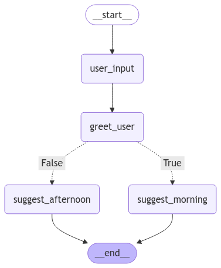

🔗 Tema 5: Chains – Construcción de Flujos de Trabajo
🚀 ¿Qué son las Chains en LangGraph?
Las Chains (cadenas) son uno de los componentes más esenciales dentro de LangGraph.
Permiten encadenar múltiples nodos y funciones para crear flujos de trabajo complejos y estructurados.
Piensa en las chains como una línea de montaje, donde cada nodo realiza una tarea específica y pasa el resultado al siguiente.
Esto permite dividir procesos en pasos más manejables y reutilizables.
Sin embargo, no todos los flujos siguen un camino lineal. A veces, es necesario bifurcar el flujo en función de ciertas condiciones.
🧠 ¿Por qué usar Chains?
- Modularidad: Dividir grandes procesos en nodos pequeños facilita el mantenimiento y la depuración.
- Reutilización: Las chains pueden componerse de nodos reutilizables en diferentes flujos.
- Escalabilidad: Permiten construir flujos extensibles que pueden crecer fácilmente añadiendo más nodos.
⚙️ ¿Cómo se Define una Chain?
Crear una chain en LangGraph implica:
1. Definir nodos individuales.
2. Encadenar esos nodos en una secuencia lógica.
3. Permitir bifurcaciones condicionales si es necesario.
Además de encadenar nodos de forma secuencial, podemos agregar bifurcaciones condicionales para que el grafo tome diferentes rutas según el estado actual.
📋 Ejemplo Práctico: Creación de una Chain
Vamos a construir un flujo simple que:
1. Reciba el nombre del usuario.
2. Salude al usuario.
3. Sugiera una actividad diferente según la hora del día (mañana o tarde).
from typing_extensions import TypedDict
from datetime import datetime
class State(TypedDict):
name: str
message: str
def user_input(state: State):
print("--- Nodo 1: Entrada del Usuario ---")
state["name"] = "Raul"
return state
def greet_user(state: State):
print("--- Nodo 2: Saludo ---")
state["message"] = f"Hola {state['name']}, ¡bienvenido de nuevo!"
return state
def suggest_morning(state: State):
print("--- Nodo 3: Mañana ---")
state["message"] += " Te recomiendo empezar el día con un café ☕️"
return state
def suggest_afternoon(state: State):
print("--- Nodo 4: Tarde ---")
state["message"] += " ¿Qué tal salir a dar un paseo por la tarde? 🚶♂️"
return state
def decide_path(state: State) -> bool:
hour = datetime.now().hour
return True if hour < 12 else False
- Nodo 1 (user_input): Recoge el nombre del usuario.
- Nodo 2 (greet_user): Genera un saludo personalizado.
- Nodo 3 y Nodo 4 (suggest_morning/suggest_afternoon):
- Si es por la mañana, el flujo sugiere tomar un café.
- Si es por la tarde, se recomienda dar un paseo.
- Función
decide_path: Evalúa la hora actual para bifurcar el flujo hacia el nodo adecuado.
🏗️ Construcción del Grafo con Chains
Encadenamos los nodos en secuencia para formar la chain completa.
from langgraph.graph import StateGraph, START, END
builder = StateGraph(State)
builder.add_node("user_input", user_input)
builder.add_node("greet_user", greet_user)
builder.add_node("suggest_morning", suggest_morning)
builder.add_node("suggest_afternoon", suggest_afternoon)
builder.add_edge(START, "user_input")
builder.add_edge("user_input", "greet_user")
builder.add_conditional_edges("greet_user", decide_path, {True: "suggest_morning", False: "suggest_afternoon"})
builder.add_edge("suggest_morning", END)
builder.add_edge("suggest_afternoon", END)
graph = builder.compile()
📈 Visualización del Grafo
Para observar cómo se estructura nuestro grafo, generamos una visualización:

🚀 Invocando el Grafo
Ahora ejecutamos el grafo con una entrada simple.
--- Nodo 1: Entrada del Usuario ---
--- Nodo 2: Saludo ---
--- Nodo 3: Mañana ---
{'name': 'Raul', 'message': 'Hola Raul, ¡bienvenido de nuevo! Te recomiendo empezar el día con un café ☕️'}
--- Nodo 1: Entrada del Usuario ---
--- Nodo 2: Saludo ---
--- Nodo 4: Tarde ---
{'name': 'Raul', 'message': 'Hola Raul, ¡bienvenido de nuevo! ¿Qué tal salir a dar un paseo por la tarde? 🚶♂️'}
El grafo procesa cada nodo secuencialmente, generando una respuesta estructurada para el usuario.
🔎 Recursos:
- Ver notebook en Google Colab
 Definición Condition Edge
Definición Condition Edge- Clase Condition Edge
🧑🏫 ¿Qué Hemos Aprendido?
- Chains: Permiten conectar nodos en secuencia, formando flujos de trabajo escalables y reutilizables.
- Modularidad: Los nodos pueden realizar tareas pequeñas que, al combinarse, crean flujos más complejos.
- Chains Condicionales: Permiten bifurcar el flujo en función de valores dinámicos (como la hora o entradas del usuario).
- Encadenamiento Secuencial y Dinámico: Los flujos no siempre son lineales, y LangGraph permite construir grafos que se adaptan a diferentes situaciones.
🌐 ¿Qué es lo Siguiente?
En el siguiente tema, exploraremos el uso de Routers, donde aprenderemos cómo crear bifurcaciones y poder redirigir el flujo para que tome diferentes caminos.